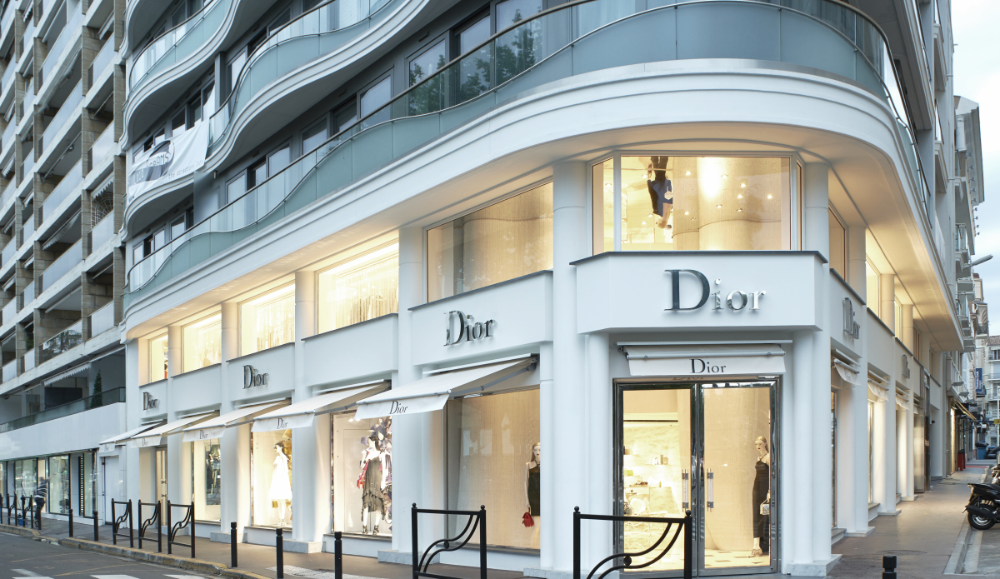

The world's most powerful fashion houses
High end designs have unique one-of-a-kind styles. They can be moderately or very expensive and are among the most influential fashion brands. A few of the top high-end brands include Dolce and Gabbana, Gucci and Prada. High-end brands are classified by certain features, styles and fabrics.
High fashion, or Haute Couture is the creation of exquisite clothing custom made for individual elite clients. It is not mainstream, as they use the best quality and rarest materials available, as well as personalized craftsmanship, hence the name Haute Couture.
Haute couture refers to the creation of exclusive fashions. It is a common term for custom-fitted clothing as produced primarily in Paris but also in other fashion capitals such as New York, London, and Milan.
Here are the world's 10 most powerful fashion houses:
All the information from these websites were taken from the following sites: Wikipedia, lifestyleasia, nlc, rochiideocazie, unica, Google images and ofcourse from the information I gained previously in my life.